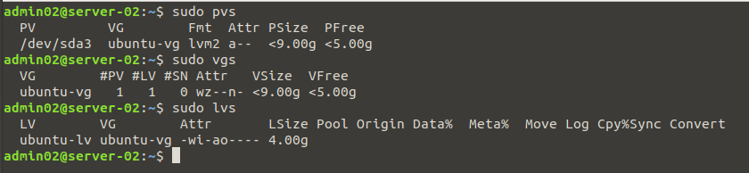
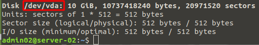
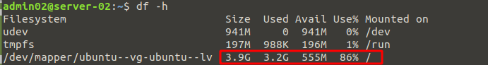

extend volume to new physical disk with lvm
The initial OS was installed using LVM so extending it is relativly straight forward. The steps below describe the process, here the Ubuntu server / was running low on space. I added a new disk and extended the existing volume to use the new disk increasing the free space on root /

Example image above shows an initial storage configuration on the left. The right shows additional storage added later and used to extend existing volume.
Stage 1: Gather Info
First things first is to gather information on the currenet disk setup so you can ID the VG and Partition you will be expanding. 1 or more PVs are added to a VG on which one or move LV can sit. So below we take a look at the current volumes (Physical Volume, Volume Group, Logical Volume) on the server.
sudo pvs sudo vgs sudo lvs

If we take a look at fdisk -l we can see our current disk.
sudo fdisk -l

Stage 2: Add New Disk
Now we have a good idea of the current configuration of our server's storage we add the new disk (in this case a virtual disk). We can use fdisk -l again to confirm it is seen by the OS. We then need to create our PV from the new disk which will allow us to add it to our existing VG.
sudo fdisk -l

sudo pvcreate /dev/vda

Stage 3: Add our newely create PV to our existing VG
Once we have sucessfully created the PV using the new disk, we need to add it to the VG and then extend the LV to allow us make use of the additional space.
sudo vgextend ubuntu-vg /dev/vda sudo lvm lvextend -l +100%FREE /dev/ubuntu-vg/ubuntu-lv

While we have now sucessfully added the space to the volume, we need to resize the actual filesystem before it's accessible to us.
df -h

As you can see from above, the additional space is still not available to the OS. Now we resize the filesystem and we should then see the new space.
sudo resize2fs -p /dev/mapper/ubuntu--vg-ubuntu--lv df -h